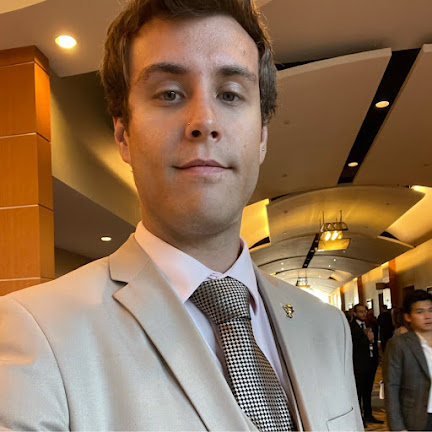

Zachary Thallas
719.252.2700 • Pueblo, Colorado •
zmthall@gmail.com •
www.linkedin.com/in/zachary-thallas
Sales Account Management and Accounts Receiving
Account Management | Account Receiving | Communication | Management | Leadership
Experienced and reliable professional with over 8
years of conflict resolution skills both in-person
and over the phone. Demonstrated understanding of
sales techniques and ability to systematize learned
methods for efficient execution of work.
Solution-oriented with a focus on streamlining
processes for increased productivity. Highly
adaptable to fast-paced environments with
exceptional organizational and communication skills.
Proficient in QuickBooks to effectively manage
financial data and accurately record transactions.
Proficient in mathematics and numbers, quick to
learn and comprehend. Effective multitasker with
strong time management abilities to ensure job
requirements are met with efficiency and attention
to detail.
WORK EXPERIENCE
Pueblo City Cab – Pueblo, Colorado 12/22 to Present
Accounts Receiving/Administrative Assistant
Managed and tracked business finances, including daily revenue from cash and credit transactions, account receivables, expenses, and deposits. Assisted in administrative tasks to support transportation operations workflow.
- Established streamlined filing system for billing, accounts, and payroll, enhancing organizational efficiency.
- Managed account billing and invoicing operations using QuickBooks software for accounts located in the Pueblo County region.
- Reorganized billing and accounts receivable department systematically aiding in efficiency and efficacy.
- Assisted in resolving billing discrepancies, resulting in the successful collection of outstanding balances in full.
- Optimized data entry processes via computer systems for heightened production efficiency.
- Monitored and recorded daily revenue from cash, credit, and account transactions.
Mehvya Alliance – San Diego, California 10/2021 to 10/2022
Direct Marketing Account Manager
Conducted interviews, pursued customer acquisition leads, and trained associates in leadership and sales.
- Created/maintained office forms and procedures to facilitate efficient management and training processes.
- Led and trained a team with emphasis on boosting morale, increasing customer acquisition, and driving sales growth.
- Provided individual coaching and conducted group training sessions for mentored team members.
- Conducted interviews in a professional manner, achieving a hire rate of 50-60%.
- Consistently achieved high weekly sales averages, ranking as one of the top representatives in the office.
- Streamlined office and storage organization, resulting in increased efficiency of operations.
- Monitored and analyzed team sales to identify areas for coaching and training, maintaining a high team sales average.
Sam’s Club - Pueblo, Colorado 02/2020 to 09/2020
Membership Associate
Managed dorm front desk operations with a focus on ensuring student safety and security.
- Managed front entrance security and desk operations, emphasizing FERPA compliance.
- Successfully assigned, reassigned, and managed access without incident.
- Acted as a first responder and mandatory reporter for dorm-related incidents.
Sam’s Club - Pueblo, Colorado 05/2018 to 01/2019
Club Associate
Handled customer transactions and provided excellent customer service at the front-end of the store.
- Handled member complaints regarding merchandise and customer service in a timely manner.
- Provided friendly customer service while accurately managing cash transactions.
- Effectively communicated to increase credit card sales.
- Adhered to corporate policy while maintaining a clean and organized work area.
EDUCATION
Pueblo Community College - Pueblo, Colorado
Associates of Science, May 2018
Colorado University, Boulder – Boulder Colroado
Bachelor of Aerospace Engineering and Mathematics, August 2018 - Present
PROFESSIONAL SKILLS
- Demonstrates exceptional organizational, critical thinking, and problem-solving skills with a strong focus on attention to detail and accuracy.
- Proficient in a variety of technologies, including email, database entry, and Microsoft Office.
- Skilled in leadership and collaboration with an emphasis on team building and teamwork.
- Exhibits excellent communication skills and excels in representing customers.
- Quick learner who dedicates personal time to acquire the knowledge necessary for achieving success.
VOLUNTEER EXPERIENCE
Destination Imagination Pueblo, Colorado 05/2015 to 05/2018
Global, volunteer-led nonprofit organization
- Managed and mentored a team of program participants, successfully designing and implementing all program necessities for our students.
- Led the team to win 3rd place in their category in the regional competition.
- Mentored other team managers/mentors to secure victories in their regional competition and advance to the state level.
AWARDS AND HONORS
Pueblo Community College – Pueblo, Colorado May 2018
- Attained Summa Cum Laude honors with multiple outstanding student awards, certificates of appreciation, certificates of recognition, and a certificate of academic excellence.
- Successfully completed leadership programs and was awarded leadership certificates each year.
PROFESSIONAL MEMBERSHIPS
- Student Director of Presidential Leadership Program (PLP), 05/2015-05/2018
- Vice President of Services - Alpha Rho Theta chapter of Phi Theta Kappa, 05/2017-05/2018
References Available Upon Request
Contact Information My Hobbies